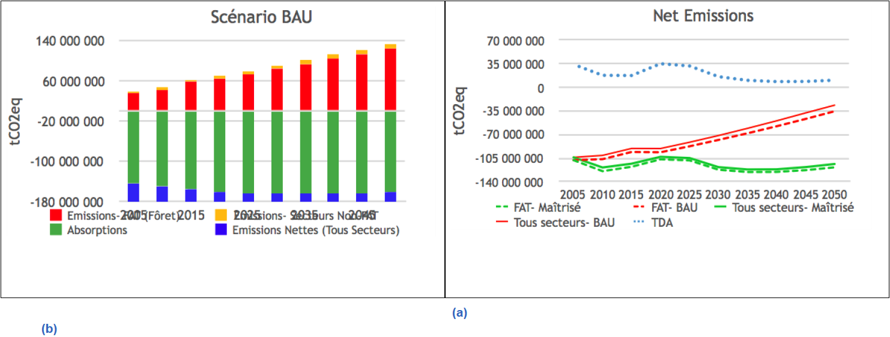
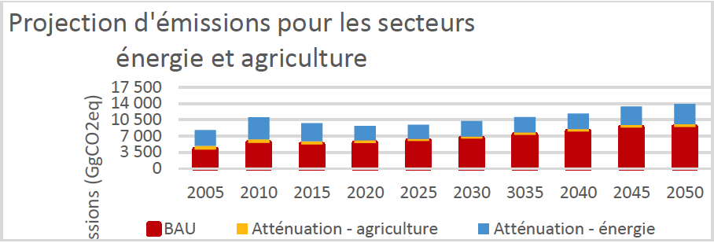

In accordance with decisions 1/CP.19 and 1/CP.20 and its strategic development plan, Gabon communicates, through this document, its second Nationally Determined Contribution (NDC) to combat climate change and all the information relating to this second NDC. The elements included in Gabon's Nationally Determined Contribution are the synthesis of Gabon's ambitions and public policies which, at the time of making a turning point in its development, chooses to resolutely commit to sustainable development, based on controlled greenhouse gas (GHG) emissions. This ambition is all the more resolute as it is voluntarist: because of its sustainable forest management policies that have preserved a natural endowment if not condemned to dwindle in an as usual regime, Gabon is an important carbon sink, absorbing more greenhouse gases than it emits , and will remain so thanks to the deepening of these policies, while choosing to further reduce its greenhouse gas emissions. This submission is doubly important for Gabon, on the one hand, because of the commitment of the President of the Republic to pursue a policy of sustainable development and on the other hand, to contribute to the global effort to fight against climate change.
Gabon commits unconditionally to remain carbon-neutral up to and beyond 2050.
Conditionally, Gabon will strive to maintain its net absorption of carbon at a minimum of 100 million tonnes of CO2 equivalent per year beyond 2050.
The Gabonese Republic currently net absorbs just over 100 million tons of CO2 equivalent (103 million tons of CO2eq) per year. Over the last decade, we have net absorbed just over 1 billion tons of CO2eq and increased net absorptions by about 100 million tons. We have increased net absorption whilst many countries have increased net emissions.
In its second NDC, the Gabonese Republic commits unconditionally to remain carbon-neutral up to and beyond 2050. Furthermore, and subject to continued access to international markets for its wood products, access to a carbon market for its net-sequestration carbon credits in the form of ITMOs (Internationally Transferred Mitigation Outcomes) at a competitive carbon price and / or appropriate international support through non-market mechanisms, Gabon will strive to maintain its net absorption of at least 100 million tons of CO2eq per year beyond 2050. This goes well beyond the global net carbon neutrality target for 2050 commonly adopted.
Gabon's economic model, which is already showing a track that will credibly allow it to avoid the deforestation curve experienced by all developed and developing nations alike, is to implement a broadly based program of economic transformation through sustainable development across all sectors of the economy, underpinned by the establishment of a sustainable forestry and timber processing industry in Gabon.
By processing timber locally, the value-added in the national economy will be multiplied ten-fold, with the creation of ten times more jobs. By supplementing timber production from natural forests through afforestation with carbon-positive plantations in savanna areas, Gabon could transform its timber industry from a $1 billion turnover to $10 billion per annum and from 30,000 jobs at present to 300,000 by 20301, while securing its carbon sink through forest management and sound land-use planning.
However, this will require substantial and continuous direct investment in areas such as the provision of infrastructure, logistics, municipal services, land-use planning and administration; and in parallel, a comprehensive transformation of all sectors of the economy, including finance, through healthcare, agriculture, construction, transport, retail and distribution and the like.
Gabon plans to maintain our emissions in the energy sector, the second source of emissions, at or below 2005 levels, mainly by transitioning from hydrocarbon sources of energy to hydro and solar energy, by improving energy efficiency in households, services, industries and transport, by replacing fuel oil plants with natural gas, implementing a “zero flaring” policy in the oil industry and improving interconnectivity of the electricity grid.
In the agriculture sector, Gabon commits to promoting tow-till agriculture by developing irrigation and agro-forestry, formalizing agricultural land-tenure systems, preserving High Conservation Value (HCV) areas in industrial concessions, and using cover crops to reduce the need for chemical fertilize in plantations.
In order to achieve its objectives, it is essential that Gabon is able to access climate finance in exchange for the ecosystem services it will continue to provide, and in so doing, access the critically needed long-term development capital funding that we require in order to implement our program of sustainable economic development and transformation.
Provided payments for carbon and ecosystem services become a reality in the future, these may make sustainable forestry more financially profitable, further strengthening the model and making sustainable harvest more competitive than other land uses that destroy the forests, such as soya and livestock ranching. They could also subsidize the management costs for protected areas and forestry concessions. The controlled scenario is based on the condition that these payments are made.
The elaboration of this NDC is also dependent on any climate change induced changes in historical rates of change in carbon stocks in the Congo Basin Forests, not resulting in reduced capacity to absorb carbon dioxide. In such a scenario, the NDC will have to be revised accordingly, with the ambition of maintaining the effort but taking into account the scientific data on the targets.
Gabon's commitment to maintaining its status as a net absorber of CO2eq through 2050 is accordingly conditional on the possible impacts of climate change on the Congo Basin rain forests, as well as on being able to access the necessary investment capital and all related resources and clean technologies required to implement its plan for economic development and transformation over the period to 2050, and in particular on:
Continued access of Gabonese timber products (certified legal, sustainable, climate and biodiversity positive and socially responsible) to international markets;
Access to international finance through a carbon market under the Paris Agreement, that recognizes the historic and ongoing contribution Gabon has made through net sequestration of carbon to the mitigation of the climate change and the loss of services provided by Nature in the form of ITMOs, as well as through appropriate non-market mechanisms;
Progress towards international recognition of the value of Gabon's ecosystem services;
Availability of investment in Gabon's renewable energy sector, energy efficiency and sustainable agriculture.
For comparison purposes, the NDC 2020-2025 presents “Business As Usual” (BAU) models for the different sectors responsible for GHG emissions. For the forestry and other land-use (FOLU) sector, the emission levels are also compared to average tropical deforestation rates. Most other tropical rainforest countries have followed/are following similar TDA trends.
Gabon could follow this trajectory in coming decades in the absence of strong measures that Gabon plans to implement with the support of the international community.
The economic costs of adaptation will be significant, and Gabon will require support for adaptation to be made available.
In particular, this will be necessary to:
Compensate or accompany Gabon as we adjust to the loss of the 60% of our economy currently generated from oil and gas that will almost certainly disappear by 2040;
Deal with intensified coastal erosion and sea level rise, which may require the re-localization of Gabon's second city, Port Gentil, as well as large parts of the capital, Libreville;
Support to transform Gabon's agriculture sector into a modern, low-carbon, climate resilient industry, capable of supporting a growing and transforming society and economy;
Support for the establishment of an improved scientific monitoring system for climate change and its impacts integrating meteorology, oceanography and hydrology measurements in a centralized database;
Developing improved climate modeling of the complex Western Congo Basin climate system, to allow for better prediction of future threats;
Re-design cities and towns to make them climate resilient and implement the substantial, regional, municipal and town planning and related provision of services that will be required;
Build climate resilient infrastructure;
Deal with the inevitable increase in climate refugees, who will flock into the humid Congo Basin as agricultural production in surrounding countries and regions fails;
Address issues such as climate change driven increases in human – elephant conflict (linked to the reduction in fruiting in rain forest plants du to climate change), which have significant immediate impact on the well being of rural populations.
It is now commonly recognized that the world is facing a double crisis: climate change and the loss of nature and biodiversity. At the international level, Gabon is one of the countries which contributed the least to these crises. In fact, Gabon has maintained a positive carbon balance over the past millennium, and over the past decade has absorbed just over a billion tonnes of CO2 equivalent on a net basis. Covering 11% of the Congo Basin rainforest, Gabon is home to exceptional biodiversity and has shown strong leadership in the region in terms of the creation, management and conservation of protected areas with almost a quarter of its national territory enjoying protection.
With 88% of its territory covered by forests, Gabon is one of the most forested countries on the planet2 and has a unique status, being a carbon sink whose total absorptions have remained very much higher than total emissions. This is not the simple result of a situation of natural rent, but on the contrary it remains possible thanks to two decades of effort, during which Gabon has drawn up strict environmental and forestry laws, transforming 21% of its territory into protected areas, and 60% of the territory in sustainable forest concessions.
Major policy decisions (see also Figure 1) include the Forest Law of 2001 (implemented from 2005), which mandates the sustainable management of all forest concessions; the 2002 decision (implementing the National Parks Act 2007) to create a network of 13 national parks, which cover 11% of the country; the log export ban introduced in 2009; the creation of the National Council on Climate Change in 2010 and the adoption of the national climate plan in 2012; the adoption of the law on sustainable development and the law on environmental protection in 2014; the ratification of the Paris Agreement in 2016; and the signing of a climate change ordinance in 2021.
Figure 1. Timeline of Gabon's initiatives impacting GHG emissions and sequestration.
Gabon is no longer limited to its underlying commitment as in its Planned Nationally Determined Contribution (INDC) and instead intends to move towards a more ambitious approach.
This second NDC is national and covers all sectors.
Since Gabon's carbon footprint is not only carbon neutral, but positive (the country absorbs more CO2 than it emits), the approach is, first, to remain carbon neutral, and then to maintain Gabon's net absorption capacity and, if possible, increase this capacity, which will thus have a positive impact on the levels of GHGs in the atmosphere, until 2025 and 2030 and beyond.
Gabon has a rather special status within the Paris Agreement. The NDC process was designed to help net emitters achieve neutrality, and is therefore not easily applicable in Gabon. To a certain extent, it could be argued that Gabon has already achieved the goal of the Paris Agreement, thanks to the measures taken from 2001, and that our objective now is to consolidate these achievements.
However, Gabon wishes to go further. As part of a global community, Gabon recognizes that it has the opportunity to play an important role in the global fight to achieve a positive carbon (storage) economy. Gabon could, under the terms of the Paris Agreement and future country commitments, support certain Parties in respecting their climate commitments (carbon neutrality) through the exchange of Internationally Transferred Mitigation Results (ITMOs ), combined with the corresponding adjustments.
Gabon's actions to protect its forests have helped create a global insurance policy against climate change and nature loss: its forests provide important ecosystem services3 by storing carbon and helping to maintain stable climate and weather. In Africa, Gabon's forests are part of the Congo Basin rainforests, an essential ecosystem that spans the whole of West Africa and helps regulate natural climatic processes in the region, including rainfall, river flow and water quality,4 which also support the Sahel5 and the Nile Basin.6 The Nile Basin provides water to over 200 million people and is exposed to pressure population growth and agricultural demand, which exacerbates the risk of cross-border water-related conflicts in the region.7 Gabon, a country with “HFLD” (High Forest Cover and Low Deforestation) status, remains committed to the preservation of its forests in order to ensure that the communities and sectors that depend on the ecosystem services provided by the forests of the Congo Basin are not affected by the loss of these ecosystem services.
As such, forest dynamics are key to the country's future emissions profile. All developed countries and almost all developing countries have recorded a decline on the deforestation curve (Figure 2). Gabon, along with countries such as Guyana, Suriname and the Republic of Congo, are and have the potential to remain in the first phase (High Forest Cover and Low Deforestation, HFLD) of deforestation.

Figure 2. Stages of the deforestation curve.8 Gabon is in Stage 1.
In 2005, some countries proposed the RED (Reducing Emissions from Deforestation) mechanism to the United Nations Framework Convention on Climate Change (UNFCCC) at COP11 in Montreal. In 2007, a second D (Degradation) was added during COP13 in Bali. REDD+, as it is now known, originated at COP15 in Copenhagen with a key decision on methodological guidance for activities relating to reducing emissions from deforestation and forest degradation and the role of conservation , sustainable forest management and enhancement of forest carbon stocks in developing countries. This voluntary process was aimed at an urgent response to deforestation, which contributes about 11% of global GHG emissions9. In 2009, 30 billion dollars were pledged over 3 years by developed countries for the “quick start of REDD+”.
At COP17 in Durban in 2011, it was clear that fast start funds could not have been made available. Gabon faced a serious dilemma, not being able to risk the future of its forests or that of its economy, while waiting for contributions from international donors for emission reduction payments.
In addition, with Gabon's oil economy set to wither in a future low-carbon world, carbon payments may struggle to create the hundreds of thousands of jobs Gabon needs to occupy its young population. , nearly half of whom are under 20 years old.
The economic model of the Gabonese timber industry is based on the postulate that a sustainably exploited forest is a forest preserved in relation to alternative uses, and on the scientifically demonstrated certainty that such a forest also stores increased quantities of carbon L logging, if carried out in a sustainable manner by applying the set of reduced impact logging practices for climate change mitigation, RIL C, as envisaged Gabon, is not harmful to the forest. The harvest rate is extremely low (1 to 3 trees per hectare) and RIL C practices such as directional felling or better road planning make it possible to limit the impact of activities on biomass. It is thus estimated that RIL C practices by all concessionaires could reduce GHG emissions per hectare by 50% compared to the current national average.
Furthermore, sustainable forest management is a gateway to forest certification that Gabon wishes to generalize by 2025 via the "Forest Stewardship Council" standard (in particular, and which should offer real added value to the By increasing the economic value of the forest, certification thus prevents conversion of the forest to other uses, while providing jobs and income. Similarly, Gabon's commitment to local processing of wood was materialized in 2009 by the ban of log exports, makes it possible to give added value to wood and to develop a strong forest economy, contributing to the growth of GDP and jobs while significantly reducing emissions per point of GDP.
For more than a century, Gabon, like many other African countries, exported logs to Europe, then to the United States and Southeast Asia. However, logs only represent around 8% of the timber value chain (the jobs created during the harvesting, extraction and transport of logs represent 8% of the total and 92% of the jobs in the sector are in the transformation). By banning the export of logs and developing wood processing in the country, Gabon could multiply by 10 the value of the forestry sector and the resulting jobs. By supplementing wood harvested from natural forests with plantations of fast-growing species, the industry could further double this value creation and thus make the forest an essential resource for the economy. Gabonese economy; and base on it hundreds of thousands of socially and environmentally sustainable jobs (there are currently 30,000 in the forestry sector), for a category of Gabonese whose livelihoods depend on the sustainable management of the Gabonese forest. Gabon could literally exploit forests (sustainably) to save forests, by creating a sustainable industry and economy capable of replacing oil and gas in its economy and thus combining sustainable economy and maintenance of the carbon sink.
The development of a quality wood sector will involve an increase in the volumes harvested, which must be accompanied by sustainable management measures. By generalizing RIL-C practices for all concessions, it will be possible to increase production while reducing or keeping stable greenhouse gas emissions and thus developing a sustainable and economically viable industry.
To achieve this, the implementation of this economic model is based on 3 elements:
Attract enough private sector investment to grow the industry;
Have continuous access to international markets for certified tropical timber;
Create management and traceability systems to ensure Gabon's timber products are legal, traceable, sustainable, climate and biodiversity friendly, and socially responsible.
Nevertheless, knowing that logging, even with the selective logging practices applied in Gabon with a harvest of 2 trees/ha over a rotation period of 25 years, is detrimental to the most sensitive part of forest biodiversity humid tropics, Gabon has joined the 30x30 program of the High Ambition Coalition for Nature and Peoples, aiming to transform 30% of terrestrial and aquatic ecosystems into protected areas by 2030.
The country's vision is to develop landscapes where the areas most rich in biodiversity are protected, surrounded by a mosaic of forest concessions, community forests and rural areas.
In accordance with decision 1/CP.21, Gabon presents “the information necessary for clarity, transparency and understanding” as part of its national contribution, which can be found in table 1 below.
| Commitment type |
Commitment in absolute value |
| Perimeter |
The commitment covers all GHG-emitting sectors as well as the net absorptive capacity of the forest sector |
| Year of reference |
2005 |
| Commitment Period |
2020-2030 |
| Reduction level |
Due to its particular status as a carbon sink, and the importance of forests in Gabon's climate commitments, the country undertakes to remain carbon neutral and, subject to support, to do everything to maintain its absorptions. net emissions at a level of 100 million tCO2eq per year. In 2030, gross emissions from the forest sector should reach 30.4 million tCO2eq (30,381 GgCO2eq) thanks to the measures put in place. Similarly, gross removals are expected to reach 152.5 million tCO2eq (152,489 GgCO2eq). In 2030, emissions from the energy and agriculture sectors will amount to a controlled scenario of 3.8 million tCO2eq (3,798 GgCO2eq): 3,322 GgCO2eq for the energy sector, 476 GgCO2eq for the agricultural. |
| Cover |
The sectors covered are: Forest and other land uses (FAT) For the forest sector and other land uses, the following pools were taken into account: aboveground biomass, belowground biomass and dead organic matter (DOM). Harvested wood products have not been included, consistent with the methodology for calculating the Forest Sector Emissions Reference Level (FRL) which was presented to the UNFCCC by Gabon in February 2021. Gas considered: CO2. Energy and oil/flaring For energy and oil/flaring, three types of greenhouse gas emitting activities will be taken into account, in accordance with the IPCC Guidelines. These are activities relating to stationary combustion of fuels, mobile combustion of fuels (natural gas, kerosene, diesel, gasoline etc.) and fugitive emissions relating to oil production, gas production and flares natural. Gases considered: CO2 and fugitive methane emissions. Indirect GHGs: NOx, CO, CONMV, SO2. Agriculture For the agricultural sector, the carbon reservoirs considered are in the burning of biomass, which is included here in the burning of savannahs and agricultural residues. Carbon in drained organic soils is also included for savannas and croplands. The other components of agriculture are not carbon reservoirs. Gases considered: CO2, N2O, CH4 The Waste and Industrial Processes sectors have been accounted for in the GHG inventories. However, they are not part of the quantified mitigation measures because of their very low impact in proportion to the three main sectors which are the FAT sector, energy and agriculture. |
| Planning process |
The NDC 2020-2030 was developed using the following methodology:
Synergies have been sought with all sectoral and national policy documents, and studies carried out or in progress (UNDP). The reports produced by the CNC to the UNFCCC (National Communications, Updated Biennial Report) have been prioritized for the identification of actions to be implemented and the quantification of emissions and absorptions. The development of the NDC was done with a constant concern for inclusiveness and the involvement of stakeholders. |
| Assumptions and methodological approach |
The underlyings taken into account are:
The "controlled" scenario takes into account all the public policies undertaken after the year 2000 (forest code, creation of national parks, national plan to reduce flaring, strategic planning of the PSGE with its low-carbon industrial development, National Plan Climate, National Investment Framework (CAFI, etc.) but also future trends, e.g. the doubling of the volumes of wood produced offset by the implementation of sustainable forest management practices known as "RIL C", carbon neutrality in agro-industrial concessions and eucalyptus plantations. |
| Why the NDC is ambitious and fair given national circumstances |
This NDC is a strategic document for Gabon, informed by in-depth data collection, solid technical analysis and broad stakeholder engagement. In the case of mitigation, detailed information on the sectors and an estimate of the progress of these measures made it possible to propose conditional and unconditional contributions over the period 2020 - 2030. All the measures proposed are also in line with Gabon's development objectives formulated in the PSGE and then the Transformation Acceleration Plan (2020). The NDC is particularly ambitious because it proposes to maintain, until at least 2050, the status of a carbon-neutral country. Subject to support, Gabon will do everything to remain a “net carbon sink” country by committing to maintain a level of net absorption above 100 million tCO2eq. At the same time, Gabon will pursue its economic development objectives in the energy, agriculture and forestry sectors, without impacting the country's carbon storage potential. |
Table 1: Information to facilitate clarity, transparency and understanding (ICTU guidance) of the NDC revision.
Gabon presents two contrasting scenarios here: so-called "Controlled" and trend "Business as Usual (BAU)" (Figure 5). The controlled scenario represents the conditions under which political actions have been and will be implemented to reduce or prevent greenhouse gas emissions. The controlled scenario takes into account historical data up to 2015 and projected data from 2020 to 2050. The BAU scenario represents the conditions without mitigation measures and presents historical data up to 2005, and projected data from 2010 to 2050.
It is important to note that for the FAT sector, the projections for the two scenarios (Controlled and BAU) only took into account the data from the "Forest" - as presented in the FRL - and did not include data from Other Land Uses10, as presented in the greenhouse gas inventory (GGI). However, for consistency with the IGES, historical data for the entire FAT sector is presented in Figure 5a for 2005-2015 (separated into “Forest” and “Other Land Uses”). “Other Land Use” emissions and removals represent only 3% of TSF sector net removals and (a) are not expected to contribute significantly to the projected net removals between 2020 and 2030,
However, the “Other Land Use” sector will be included in future versions of Gabon's NDC to ensure completeness in the FAT sector as well as full consistency with the IGES.

Figure 3. Projected emissions and business as usual scenario (BAU) of TSF, energy and agriculture sectors. Data for 2005-2015 is actual performance (striped columns). The data for the scenarios are projected from 2020 and the business as usual scenario (BAU) is projected from 201011.
Tables 2 and 3 below present the ambitions for 2030 for the 3 key sectors: FAT (forestry), energy and agriculture, compared to the reference year 2005.
| Sector | Emissions | 2005 | Mastered 2030 | % change 2005-Mastered |
|
FAT (Forest) |
Gross emissions |
35,623 |
30,381 |
-14.7% |
|
Gross removals |
143,602 |
152,489 |
6.2% |
|
|
Net removals |
107,979 |
122 108 |
13.1% |
Table 2 Ambitions for 2030 for the FAT (Forest) sector (GgCO2eq).
| Sector | 2005 | Mastered 2030 | % change 2005- Controlled |
|
Energy |
3,338 |
3322 |
-0.5% |
|
Agriculture |
799 |
476 |
-40.4% |
|
Total |
4,137 |
3,798 |
-8.2% |
Table 3 Ambitions for 2030 for the energy and agriculture sectors: Gross emissions (GgCO2eq)
In 2030, gross emissions will be around 3,798 GgCO2eq for the energy and agriculture sectors, and net absorptions of 122,108 GgCO2eq for the FAT sector. Cumulatively, the net absorptions will be, all sectors combined, 118,310 GgCO2eq in 2030.
Gabon's commitments for this NDC are shown in Figure 6. Figures for 2025 and 2030 are projections based on a controlled emissions scenario.
The commitment in this NDC covers the 2030 horizon. The figures for the period 2035 – 2050 are indicative.

Figure 4. Actual (striated columns) and projected emissions and removals from the TSF, energy and agriculture sectors for the period 2005-2050 and net emissions (or, net removals)12.
Gabon's vast forests, covering 88% of the territory, represent an important carbon stock and a permanent and continuous carbon sink. As described above (and in much more detail in Gabon's Forest Reference Level (FRL)13), a series of strong policy decisions and management actions have kept deforestation below 0.1% per year 15 and ensured that protected and managed forests maintain their carbon stock and carbon sequestration function. While the Amazonian forests are suffering the impacts of climate change, the African ecosystem is proving to be much more resilient and its potential carbon absorption per hectare due to climate change should only decrease by 14% by 203014.
Figure 7 compares the scenarios of controlled and trend evolution for the TSF, energy and agriculture sectors and also presents a scenario in which we apply to Gabon the average deforestation rates of countries with tropical forests15.

Figure 5. (a) BAU scenario projections of emissions, sequestration and net trend emissions from the FAT sector (Forestry) and other sectors; and, (b) controlled and trend emissions for the FAT, energy and agriculture sectors (all sectors) from a 2005 base up to 2050 compared to the tropical deforestation average (“Tropical Deforestation Average”, TDA). (Note that the FAT – Maitrise line (green dotted line) includes Forest + Other Land for 2005 -2015, Forest only 2020-2050). The FAT-BAU line includes Drill only 2005-2050
Although Gabon's revised NDC commitment is not expressed in reference to a business as usual scenario, it is evident from Figures 5 and 7 that had it not been for the good environmental stewardship demonstrated by Gabon's leadership over the past two decades, the country's emissions profile would have been on an upward trajectory that would have brought it closer to neutrality without carbon sinks. carbon (therefore in a bad historical trend) by 2060. Figure 5b shows that if Gabon were only a country of average tropical forest, with average deforestation, its economy would be a net emitter.
Gabon has chosen not to make its commitment to a business as usual scenario, as was the case in its INDC, because future projections are a simulation which, of necessity, are based on subjective judgments. , which could be disputed. Had Gabon followed the reasoning of other rainforest countries in Africa and beyond, it might have seemed inevitable that business-as-usual scenarios would become real as countries develop (see Figure 4). That said, Figure 5 clearly shows that Gabon is on track to meet its INDC commitment to reduce its greenhouse gas emissions by 50%, compared to a BAU model.
Through its sustainable economic development plan, Gabon is trying to reverse this trend and undertakes, through this NDC, to remain a net carbon absorber until 2030 and beyond, subject to the conditionality of an influx of structured, climate-friendly and responsible investments (public, private and government-guaranteed) to accelerate the transformation of its forest, energy and agricultural sectors, complemented by market and non-market finance to reward our net carbon sequestration based on the results and ecosystem services provided by the ecosystems of Gabon.
In other words, Gabon also believes that the contribution of the carbon stock, contained in its intact forests, to climate mitigation efforts should be recognized through climate finance (i.e. that are not derived from transferable carbon units). Therefore, Gabon is seeking additional climate finance in the form of results-based payments based on the value of its forest carbon stocks and associated ecosystem services (i.e. climate regulation and weather conditions, preservation of biodiversity, etc.).
Gabon plans to review emissions and sequestration figures at least once every five years, or as improved data becomes available. Sequestration projections are consistent with the Forest Sector Reference Emission Level (FRL) and reflect refined calculations as the country strives to continually improve its methodology. As such, the revised projections take into account projected reductions in annual rates of sequestration due to the effects of climate change16. Gabon reserves the right to adjust the figures based on improvements in our data on sequestration in different ecosystems and if there is an unexpected increase in climate-related emissions from African rainforests,
In 2030, in a controlled scenario, gross emissions for the FAT sector (forestry) are estimated at 30,381 GgCO2eq, i.e.:
A reduction in emissions of 5,242 GgCO2eq or 14.7% compared to the reference year 2005.
A reduction in emissions of 54,720 GgCO2eq or 64% compared to BAU.
A reduction of 119,480 GgCO2eq or 80% compared to the TDA scenario, which is 149,862 GgCO2eq for 2030.
Gabon is the custodian of approximately 18.9 billion tonnes of CO2 stored in its forests and an additional 11 billion tonnes stored underground15.
The main mechanism for maintaining the sequestration capacity of forests is the sustainable harvesting and local processing of timber into finished and semi-finished products for export. Carbon and climate finance will be needed to ensure that this commitment is met.
As a result, Gabon will seek to attract carbon finance in the form of results-based payments and/or by generating carbon offset credits to achieve its goal of developing a sustainable economy over the coming decades. Gabon will only seek financing for carbon sequestration beyond the volume required to remain carbon neutral and is committed to generating carbon offset credits in line with the Paris Agreement, with high integrity and representing actual attenuation.
Gabon is considering two methodologies to establish the baseline for generating carbon offset credits, both recognizing the strong policy measures and programs implemented by Gabon since 2005 that have ensured that its forest resources remain intact. They are not mutually exclusive and will both be supported by the same high quality data and research programs.
The first option recognizes that Gabonese forests are a net CO2 sink. It is the result of the continued growth of existing forests and recovery from past disturbances, such as agriculture and logging. Gabon believes that the “net sequestration” approach is consistent with the objectives of the Paris Agreement and will enable continued sustainable development. Under this approach, all emissions and removals in Gabonese forests will be accounted for, with results consistent with those submitted to the UNFCCC under the Enhanced Transparency Framework. Only the part of the net removals that goes beyond simple carbon neutrality will be considered tradable in the form of carbon offset credits.
The second option, which Gabon can use in combination with the net sequestration approach, is to generate carbon offset credits using a BAU scenario, in relation to the emissions that would have been produced without these policies and measures (in coherence with the other sectors) for activities including, but not limited to:
Avoided deforestation: net carbon dioxide emissions avoided due to the implementation of Gabon's forest protection policies from 2005, compared to the BAU scenario without these policies, including the carbon dioxide absorbed by the growth of the stock existing forest on an annual basis that is attributable to avoided deforestation (forgone removals);
Avoided forest degradation: net carbon dioxide emissions avoided due to the implementation of sustainable forest management policies and practices since 2005 compared to a BAU scenario without these policies;
Afforestation: carbon dioxide emissions absorbed by reforestation and restoration activities on an annual basis;
Replacing hydrocarbon-based energy sources with renewable energy sources, improving the electricity grid to increase efficiency and reduce losses, improving energy efficiency, replacing oil-fired power plants heavy by natural gas, the implementation of a “zero flaring” plan in the oil industry, and the generalization of electrical interconnection;
To achieve these goals, it is essential that Gabon is able to access climate finance in exchange for the ecosystem services it will continue to provide and, in doing so, to access financing for the long-term development capital whose the country badly needs to implement its program of sustainable economic development and transformation;
Investment in climate-sensitive agriculture; in particular through the promotion of no-till agriculture with the development of agricultural irrigation and agroforestry, the regularization of agricultural land, the preservation of High Conservation Value (HCV) areas in agro-industrial concessions, as well as the use of cover plants to reduce the use of nitrogenous chemical fertilizers in the plantations;
Improved waste management;
Climate sensitive urban planning and building technology.
As a developing country, Gabon must pursue its economic growth and in particular ensure its food and energy self-sufficiency. These objectives may imply, at least in the short term, an increase in greenhouse gas emissions. Nevertheless, controlled development of the agriculture and energy sectors will make it possible to maintain a relatively stable level of emissions compared to the trends observed since 2015.
Thus, in a controlled scenario, gross emissions from the energy and agriculture sectors will amount to 3,798 GgCO2eq in 2030 against 4,137 GgCO2eq in 2005.
In 2030, for the energy sector, gross emissions will be 3,322 GgCO2eq in a controlled scenario.
In 2030, for the agriculture sector, gross emissions will be 476 GgCO2eq in a controlled scenario.

Figure 6 - Emissions from the energy and agriculture sectors compared to the BAU scenario.
2.4.1. ENERGY
A gradual substitution of diesel power plants by natural gas thermal power plants is already underway (70MW achieved). At the same time, emphasis is placed on the development of hydraulic energy, with an objective of 260 Mega Watts (MW) of installed capacity by 2030 and 630 MW by 2050. This makes it possible to reduce dependence energy to fossil fuels and to optimize Gabon's strong hydraulic potential.
The development of solar photovoltaic, in the planning phase, must be able to be supported by international donors. The measure targets both the development of a grid-connected solar power plant with a capacity of 115 MW by 2030, as well as the installation of a hybrid mini-grid (solar/diesel) and 330,000 water heaters solar.
Improving energy efficiency in transport, households and industry (installation of solar and LED street lights etc.) will also have a significant impact on reducing emissions. Future regulations should be able to limit the import of incandescent lamps in favor of LED and compact fluorescent lamps (CFLs). 9 million low-consumption lamps (LBC) must thus be supplied to households, as well as 35,000 compact air conditioners. At the same time, an improvement in energy efficiency in services and industry (installation of solar and LED street lamps, etc.) must be required.
The development and interconnection of electricity transmission networks will allow better access to electricity for the Gabonese population as well as a reduction in losses on the network.
The zero gas flare plan in the oil and gas industries will be updated in the light of the conclusions of the “Gas Strategy” Task Force. Finally, a new Electricity Code currently being drafted will establish a clearer legal framework for energy efficiency measures.
2.4.2. AGRICULTURE
Gabon wishes to engage in the promotion of no-till agriculture through the development of agricultural irrigation and agroforestry, the regularization of agricultural land, the use of cover crops, as well as training and sensitization of agricultural actors on the use of good agricultural practices.
The preservation of High Conservation Value (HCV) areas within land reserved for agriculture, already implemented in oil palm plantations by OLAM, will limit the impact of industrial agriculture on the forest. Gabonese.
2.4.3. WASTE
The waste sector is a sector that emits GHGs through the open-air incineration of waste, and through the management of wastewater. Emissions from this sector represent a marginal share of national emissions and are therefore not counted in Gabon's mitigation commitments, but given the country's strong population growth (per year), emissions from this sector are set to increase. Gabon now wants to consider mitigation measures aimed at better waste management (recycling, compost) and recovery (biogas from municipal solid waste). Thus, this sector is not the subject of a quantified commitment in terms of GHG reduction, but the country undertakes to study and develop the proposed measures.
Gabon is in the process of completing its national plan for adaptation to climate change. It is clear that it will need support to enable it to adapt to the effects of climate change, including sea level rise, the intensity of extreme weather events, the temperature of our cities and the impact of climate change on neighboring countries, especially climate-related migration. There is also the question of economic adaptation, given that our economy is 60% dependent on oil and gas revenues and these will decrease, if not disappear, in the next two or three decades. Gabon will improve its future NDCs to include clearer objectives and needs for adaptation, based in particular on the future national adaptation plan.
The following list of key adaptation measures will require support, which will be quantified later:
Gabon's transition from an economy dependent on oil and gas to a sustainable green economy. This will require significant investments in sustainable logging and wood processing, as well as appropriate logistics infrastructure (roads, railways and ports). The availability of concessional or sovereign financing for private sector commercial enterprises that adhere to climate and sustainability principles would greatly accelerate this transition;
Reinforcement of coastal infrastructure in Libreville and Port-Gentil in the short and medium term and assessment of the possible need to relocate and rebuild Port-Gentil, which will be below 2 m in altitude in the medium-long term;
Urban planning, climate-resilient architecture and resettlement of people and industries in areas that will be prone to flooding in the coming decades;
Creating green spaces and planting trees in urban areas to reduce the temperature of urban environments;
Transition to climate-resilient, modern and carbon-positive tropical agriculture;
In Gabon, we are already seeing a decline in fruit production from rainforest trees (perhaps a first reaction to climate stress, reduced investment in fruit production to focus resources on growth), resulting in a lack of food for fruit-eating rainforest animals. Elephants have lost their physical shape over the past two decades (they are thinner due to starvation) and there has been a consequent upsurge in crop raiding by elephants in rural and even peri-urban areas. The country must adapt to this situation by installing electric fences to protect crops from elephants17.
Investment in the Franceville International Center for Medical Research, CIRMF, to enable it to monitor and mitigate the effects of climate change on health and emerging diseases;
Invest now in the preservation of strategic ecosystems, such as mangroves, which will mitigate flooding in cities in the future, or coastal forests, which are essential for maintaining rainfall in the interior of the country;
Irrigation of industrial crops because rainfall is decreasing in the interior of the country;
Improved land use planning and investment in the maintenance of the main watersheds, both in urban and natural areas, with a view to limiting flooding linked to extreme meteorological phenomena;
Investments to ensure climate resilience of key infrastructure;
Preparedness for increased climate-related migration and instability in the region;
Investment in research and related capacity building to better monitor, understand and predict the effects of climate change.
In line with the intent of the Paris Agreement, which supports results-based payments and monetization of climate mitigation outcomes through the creation and sale of mitigation outcomes and carbon offset credits transferred to the At the international level, the Gabon NDC recognizes that Gabon must have access to all sources of international climate and carbon finance (recognizing the importance of avoiding any double counting) as presented in Table 4.
4.1.1. CARBON FINANCE
Through its ability to store and absorb more CO2 than it emits, Gabon can and must claim financing from carbon markets.
Ordinance n°019/2021 of September 13, 2021 relating to climate change will make it possible to set up a national carbon credit market, already outlined in 2014 in the Sustainable Development Law. This national market can contribute to the financing of certain actions, through a system of financial compensation for the effort to reduce GHG emissions through a national register of greenhouse gases whose mission will be to channel and stimulate part of the financial flows dedicated to the reduction of emissions (State budget, private investments, carbon tax, income from credits on the domestic market, via a carbon tax on credit transactions contributed or loans from TFPs).
The organization for managing climate issues, created for this purpose, will also be able to market carbon credits internationally and thus obtain money from the sale of credits, which can finance other actions. However, this marketing can only be done on emission reductions that do not fall within the objectives of this NDC, to avoid double counting of emissions.
The question of the carbon price remains crucial: it must be fair, given the importance of the Congo Basin forests for the climate resilience of the entire African continent, and sufficiently remunerative to cover the investment costs. measures and fund additional programs, particularly related to adaptation to climate change.
| Results-based country-to-country payments for results-related payments for continued sequestration above Gabon's sectoral emissions from ITMO (Paris Agreement Article 5.2). | Country-to-country sale of internationally transferred mitigation results (article 6.2 of the Paris Agreement) | Sale of carbon offset credits to meet compliance and voluntary obligations (Paris Agreement Article 6.4; voluntary markets) | |
| Climate finance | |||
|
Existing forest carbon stock Existing forest carbon stocks, environment and associated ecosystem services (Climate regulation and weather) |
x |
||
| Carbon finance | |||
|
Net sequestration (option 1) A portion of net carbon dioxide removals in forests, beyond what is needed to ensure Gabon's carbon neutrality |
x |
x |
x |
|
Avoided deforestation (increased net sequestration relative to BAU) (option 2) Net carbon dioxide emissions averted through implementation of Gabon's forest protection policies relative to a 2000-2009 baseline, including carbon dioxide absorbed due to increase in existing forest stock on an annual basis that is attributable to avoided deforestation (forgone removals). |
x |
x |
x |
|
Avoided forest degradation (increased net sequestration relative to BAU) (option 2) Net carbon dioxide emissions avoided through the implementation of Gabon's forest protection policies compared to the reference period 2000-2009. |
x |
x |
x |
|
Reforestation (increasing net sequestration) (option 2) Carbon dioxide emissions absorbed from reforestation and restoration activities per year |
x |
x |
x |
|
Reductions in line with the Paris Agreement, "equivalent to the Clean Development Mechanism (CDM)" in the energy, agriculture, industry and waste sectors (option 2) |
x |
x |
|
Table 4 Different options for climate and carbon financing.
4.1.2. TECHNICAL AND FINANCIAL PARTNERS (PTF)
As part of the fight against the effects of climate change, the Green Climate Fund (GCF) has granted USD 300,000 to Gabon. This sum represents the first grant granted to the country intended to strengthen the institutional capacities of the Designated National Authority (DNA)18. In 2018, Gabon submitted its country program document to the Green Climate Fund (GCF), defining investment priorities in the fight against climate change, in six priority sectors: forest, hydrocarbons, electricity, adaptation of the coastline and climate information, agriculture, cities. Gabon's Caisse des Dépôts et Consignation is in the process of being accredited with the GCF in order to increase its ability to attract financing for climate actions, however, it already acts as a service provider on behalf of the GCF. Other potential entities have been identified in the country program to serve as accredited entities: FGIS, ANPN and ANGT, thus expanding the portfolio of potential projects. Building the capacities of these entities applying for accreditation is an essential prerequisite and part of it could be financed directly by the GCF within the framework of preparatory support (“readiness support”).
At the regional and international level, already accredited entities can be mobilized, capable of carrying out larger-scale projects: Africa Finance Corporation, International Finance Corporation, AFD, AfDB, World Bank or even FAO for the agricultural sector.
In the oil sector, the country has benefited from 372 million dollars for the reduction of gas flaring at the initiative (GGFR - "Global Gas Flaring Reduction") of the World Bank after having adopted in November 2015 a national reduction plan flaring and associated gas upgrading.
In the electricity sector, the NDC highlights the development of hydroelectricity which should make it possible to cover 80% of production in 2025, the remaining 20% ​​being covered by gas and other renewable energies. The NDC presents a number of projects to be carried out in the energy sector, as does Gabon's energy policy 2016-2025 (Direction Générale de l'Energie, 2017). While climate finance should not concern investments in gas-fired thermal power plants, it could concern, in addition to hydroelectric projects, investments in renewable energies, in particular for the electrification of isolated rural areas. The financing needed in this sector would total approximately USD 4,256 million.
The FAT sector benefits from significant support from the CAFI (Central African Forest Initiative) which finances the development of the National Land Use Plan (PNAT), the National Natural and Forest Resources Observation System (SNORNF) in 18 million USD for a better knowledge of the resource. In 2021, two programs will be launched, one relating to the increase of protected areas and the development of agriculture (5 million USD) and the other relating to support for forest certification with a view to reducing emissions. of greenhouse gases (7 million USD). The third phase of CAFI takes the form of a results-based payment system. This will provide Gabon with the financial means to continue implementing activities relating to the sustainable management and preservation of forests. The partnership, worth up to $150 million, provides Gabon with an incentive to reduce GHGs by setting a carbon floor price of $5 per tonne and $10 per certified tonne. The first payment for results took place in June 2021, for an amount of 17 million dollars corresponding to 3.4 million tCO2eq stored. This mechanism has the advantage of not generating double counting (counting of emission reductions by the host country and by the buyer) since Norway, the source of the payment, does not use the credits to offset its own broadcasts. Emission reductions remain attributable to Gabon.
The World Bank's Forest Carbon Partnership Facility (FCPF) finances a support program for the implementation of a strategy to reduce emissions related to logging, implemented by the National Agency for National Parks (ANPN) ($1.95 million).
The agricultural sector is currently in full development in Gabon and is a political priority, with support for small producers via the GRAINE program and the development of industrial agriculture (oil palms, rubber trees, etc.) through the allocation large agricultural concessions to companies such as OLAM and SIAT. It has been estimated that the main climate-related investment and project opportunities by the GCF in Gabon's agricultural sector would require $116.1 million.
In terms of water resource management, several programs are already planned: a construction project for 5 watersheds in Greater Libreville (IDB financing), the Integrated Program for Drinking Water Supply and Sanitation in Libreville (PIAEPAL, AfDB), the PASBMIR project for the rehabilitation of 27 boreholes (World Bank financing, USD 60 million), the rainwater harvesting project for agriculture (FAO financing) or the capacity building project for stakeholders in the water and sanitation (UNESCO, approximately USD 140,000)19. Finally, to fight against floods in Libreville and promoting the development of watersheds in the field of rainwater drainage, Gabon received respectively $110 and $344 million from AFD20. For the improvement of climate data, on the other hand, international funding is needed to fill the gaps. Joining institutions such as the IHO (International Hydrographic Organization) is a way to obtain funding, especially for capacity building.
A technology needs assessment as well as a capacity building needs assessment have yet to be conducted in Gabon. This will clearly define the specific needs of the sectors identified. Without the necessary technology, capacity and enabling conditions that drive sustainable economic and societal innovation, Gabon will not have the capacity to fully implement its NDC. Gabon will therefore seek international partnerships (both public and private) to take advantage of opportunities for the development and transfer of technologies and continuous improvement of skills, in particular in the key sectors of the NDC.
Various enhancements to our NDC commitments are either already underway or needed:
Improving all of our methods and systems for inventorying and monitoring GHG and deforestation (stocks, emissions and sequestrations) in all sectors, including the monitoring of non-carbon GHGs (such as methane emissions from gas pipelines );
Creation of climate change models that take into account the complex climate system of the western Congo Basin and strengthen the knowledge of the links between the forest ecosystems of Gabon and the Great Congo Basin and the surrounding regions (water supply, influence on rainfall and weather patterns, etc.);
Finalization of the national climate change adaptation plan;
Gabon is currently working on understanding the impacts of human activities, in particular bottom trawling, on marine ecosystems and their carbon emissions and absorptions. The country is developing a package of data-driven fishing techniques and methods reforms and will achieve 30% protection of marine ecosystems by 2030 (currently 27%), to reduce emissions and increase sequestration in territorial waters and in the Exclusive Economic Zone of the country. Other measures to increase carbon storage in the oceans, such as the protection of whales and sharks (the top predator that plays a key role in maintaining the balance of marine ecosystems, which maintains and promotes carbon sequestration) will also be implemented as scientific knowledge becomes available.
Depending on the national context and the economic situation, Gabon undertakes to provide the following NDC within the framework of the Paris Agreement:
By maintaining a carbon neutral balance until 2050 unconditionally; and maintaining net carbon uptake above 100 million tonnes per year in 2025, 2030 and beyond,
Subject to the following requirements and conditions, which must be met for Gabon to finance its sustainable development and exit from the oil and gas economy:
Climate finance: Gabon must be able to access international climate finance in the form of results-based payments under the Paris Agreement for its existing forest and environmental carbon stocks and associated ecosystem services (c i.e. the regulation of climate and weather conditions).
Carbon finance: Gabon must be able to access international carbon finance under the Paris Agreement and voluntary markets that recognize Gabon's historic and ongoing contribution to mitigating climate and environmental crises.
Agriculture and forestry: Gabon must be able to benefit from the sustainable development of its agricultural and forestry sectors, which means that international markets must remain open to Gabon's timber and agricultural products from sustainable and carbon-neutral sources. until 2050; and
Technical support and technology transfer: Gabon needs support to continue to improve its inventory and reporting systems on the forest and land sector and its capacity for climate change modeling, including but not limited to limit, additional research and assessment sites, modelling, remote sensing and support for the development of a national system.
Gabonese Republic – Transformation Acceleration Plan 2021-23↩
Food and Agriculture Organization of the United Nations (FAO). (2020). Forest area (% of territory). World Bank. Available at: https://data.worldbank.org/indicator/AG.LND.FRST.ZS>↩
The Intergovernmental Platform on Biodiversity and Ecosystem Services (IPBES) explained the contribution of these ecosystem services to modern society in its 2019 Global Assessment Report on Biodiversity and Ecosystem Services as follows: “Most of nature's contributions to people are not fully replaceable, and some are even irreplaceable. Nature plays a critical role in providing food and feed, energy, medicines, genetic resources, and a range of materials essential for physical well-being and the preservation of heritage. culture of the people. Thus, more than 2 billion people use woodfuel to meet their primary energy needs, about 4 billion treat themselves mainly with natural remedies, and some 70% of the drugs used to treat cancers are natural products or products. of synthesis inspired by nature. Through its ecological and evolutionary processes, nature maintains the quality of the air, fresh water and soil on which humanity depends, distributes fresh water, regulates the climate, ensures pollination, controls pests and mitigates the impact of natural hazards.".↩
Sonwa, DJ, Farikou, MO, Martial, G., & Félix, FL (2020). Living under a Fluctuating Climate and a Drying Congo Basin. Sustainability , 12 , 2936.↩
Ellison & Speranza (2020) From blue to green water and back again: promoting tree, shrub and forest-based landscape resilience in the Sahel. Science of the Total Environment 739↩
Ellison et al. (2017). Trees, forests and water: Cool insights for a hot world. Global Environmental Change 43: 51-61↩
Gebrehiwot, SG, Ellison, D., Bewket, W., Seleshi, Y., Inogwabini, B.-I., Bishop, K. (2018). The Nile Basin waters and the West African rainforest: Rethinking the boundaries. WIREs Water, 6 (1), 1317.↩
Source: T. Michinaka. Approximating Forest Resource Dynamics in Peninsular Malaysia Using Parametric and Nonparametric Models, and Its Implications for Establishing Forest Reference (Emission) Levels under REDD+. Land 2018 https://doi.org/10.3390/land7020070, 7(2), 70.↩
Drained organic soil, mineral soil, firewood, gains on new land allocations after deforestation, gains-losses for conversions that do not concern the Forest.↩
Data from the NRF and the Biennial Update Report (BUR) submitted to the UNFCCC.↩
Sources of NERF data (2021, UNFCCC website); 3rd national communication (2021, UNFCCC website); RBA (2021, UNFCCC website).↩
Gabonese Republic (2021). Gabon's Proposed Modified National REDD+ Forest Reference Level (https://redd.unfccc.int/).↩
Hubau et al. (2020). Asynchronous carbon sink saturation in African and Amazonian tropical forests. Nature https://doi.org.10.1038/s41586-020-2035-0↩
Achard et al (2014). Determination of tropical deforestation rates and related carbon losses from 1990 to 2010.Global Change Biology, v20,p2540-2554.↩
FRL, 2021↩
E. Bush et al., 2020. Long-term collapse in fruit availability threatens Central African forest megafauna. Science 24 Sep 2020: eabc7791DOI: 10.1126/science.abc7791↩
PNUD, 2021, Cartographie et feuille de route pour la mise en place d’un Cadre National de Financement Intégré↩
UNDP, 2021, Diagnosis of the water sector and brief argument for advocacy on the inclusion of the water sector in the NDC↩
UNDP, 2021, Mapping and roadmap for the establishment of a National Integrated Financing Framework↩